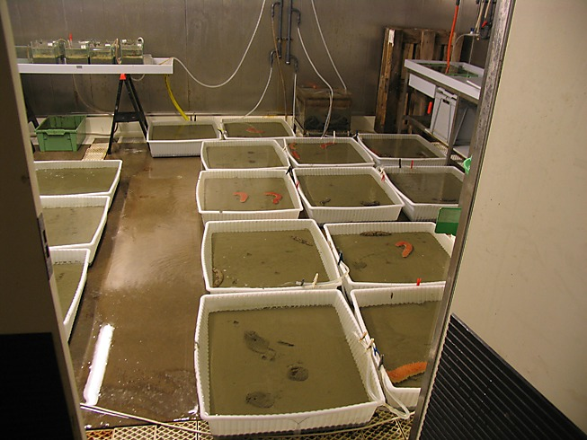

For this exercise you will work in small (3 - 5 people) groups to analyse data from two case studies (see below for details). The overall aim of this exercise is to challenge you with data typically obtained from biological and ecological studies, use R to fit suitable linear models to test specific research questions and then validate these models. As you might have guessed, data from both of these case studies contain a number of issues and as a result the standard linear modelling approach is unsuitable.
So, for each case study you will need to:
For all of the steps above, please document your workflow in an R markdown document in order to create a report detailing your approach and highlighting the issues.
These data were obtained from a mesocosm experiment which aimed to examine the effect of benthic polychaete (Nereis diversicolor) biomass on sediment nutrient release (NH4, NO3 and PO3). At the start of the experiment replicate (n = 3) mesocosms were filled with homogenised marine sediment and assigned to one of five polychaete biomass treatments (0, 0.5, 1, 1.5, 2 g per mesocosm). The mesocosms were allowed to acclimatise for 24 h after which the concentration of either NH4, NO3 or PO3 was measured in the water. The concentration of only one nutrient was measured in each mesocosm. The researchers were particularly interested in whether the nutrient concentration differed between polychaete biomass treatments and whether these effects were dependent on the type of nutrient.

Data for this case study is saved in a tab delimited file called Nereis2.txt which you can download from the Data link. Save this data file in your data directory in your RStudio project.
The data file contains the following variables:
concentration : the nutrient concentrationbiomass : the polychaete biomass levelfnutrient : the nutrient measured
These data were collected from bird surveys conducted on two Hawaiian islands (Maui and Oahu) from 1956 - 2003. The annual abundance of black-necked stilts was measured each winter using transect surveys on each island. Along with bird counts, annual rainfall data for the region was also obtained from the National Climate Data Center. The researchers were interested in understanding whether levels of rainfall impacted on bird abundance and whether any impact was different between the two islands.
Data for this case study is saved in a tab delimited file called hawaii2.txt which you can download from the Data link. Save this data file in your data directory in your RStudio project.
The data file contains the following variables:
abund : the abundance of stiltsrainfall : the amount of annual rainfalllocation : the name of the islandyear : the year the data was collected